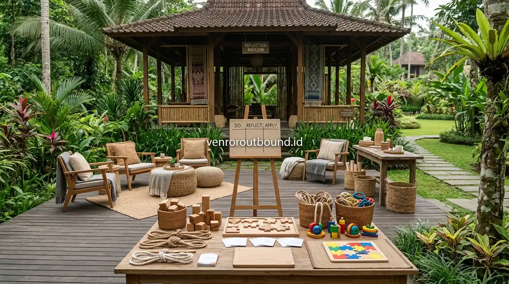

1. Rekreasi Biasa vs Outbound Keluarga: Apa Pembeda Utamanya?
Jawaban singkat: Rekreasi keluarga memberikan kesempatan untuk beristirahat dan menikmati suasana santai, tetapi outbound keluarga menambahkan aktivitas interaktif yang mendorong anggota keluarga untuk berkomunikasi, bekerja sama, dan menyelesaikan tantangan bersama. Melalui rancangan permainan yang sesuai usia, family gathering outbound menjadi media menciptakan pengalaman bersama yang lebih aktif dan berkesan.
Kapan terakhir kali seluruh anggota keluarga berkumpul tanpa sibuk dengan layar gawai masing-masing? Bagi sebagian besar keluarga modern, agenda liburan sering kali diisi dengan bepergian ke tempat wisata populer, bersantap di restoran, atau sekadar menginap di hotel. Aktivitas rekreasi semacam ini sangat baik untuk melepas penat rutinitas kerja dan sekolah.
Namun, sering kali muncul situasi di mana setelah sampai di lokasi wisata, setiap orang kembali tenggelam dalam kesibukan pribadi di ponsel pintar. Rekreasi pasif menawarkan kenyamanan, namun belum tentu memicu percakapan mendalam atau kerja sama nyata antar-anggota keluarga. Di sinilah pendekatan outbound keluarga hadir sebagai pelengkap yang menghadirkan dinamika baru dalam pertemuan keluarga.

Tips Merancang Family Gathering Seru dan Berkesan untuk Seluruh Usia
Strategi menyusun aktivitas inklusif yang ramah anak, remaja, hingga lansia.
2. Mengurangi Ketergantungan Layar Melalui Media Permainan Terbuka
Penggunaan perangkat digital dalam kehidupan sehari-hari memberikan banyak kemudahan, namun durasi paparan layar yang berlebihan dapat mengurangi intensitas interaksi langsung di dalam rumah. Saat liburan, anak-anak dan remaja sering kali merasa enggan diajak berkomunikasi jika tidak ada aktivitas menarik yang menantang rasa ingin tahu mereka.
Kegiatan luar ruang terstruktur menyediakan stimulus alami yang mengalihkan perhatian dari dunia maya. Udara segar, ruang terbuka yang luas, serta rintangan permainan visual secara alami mengajak panca indra anak bekerja aktif, merangsang motorik kasar, dan membuka ruang percakapan yang cair.

Peralatan simulasi interaktif yang dirancang khusus untuk memicu koordinasi dan tawa riang anggota keluarga.
3. Mengapa Permainan Interaktif Mampu Mempererat Kedekatan?
Proses pembentukan kedekatan emosional (*bonding*) tidak terjadi secara instan melalui instruksi verbal, melainkan tumbuh melalui pengalaman bersama yang dirasakan secara langsung:
- Komunikasi Spontan: Saat menghadapi tantangan teka-teki kelompok, orang tua dan anak saling mendengarkan ide serta menyelaraskan langkah.
- Tawa dan Relaksasi Bersama: Momen-momen lucu saat gagal melewati rintangan permainan menciptakan kenangan positif yang terus diingat.
- Kompetisi yang Menyehatkan: Membagi keluarga ke dalam regu kecil memupuk semangat juang positif sekaligus mengajarkan sportivitas antargenerasi.
- Saling Menghargai Peran: Anak merasa dihargai ketika masukannya berhasil membawa regu memenangkan tantangan permainan.

Panduan Memilih Paket Family Gathering Sesuai Karakter Peserta
Pertimbangan logistik, lokasi pegunungan, dan jenis modul outbound keluarga.
4. Pilihan Aktivitas Interaktif yang Ramah Segala Usia
Rancangan simulasi outbound keluarga mengutamakan keselamatan dan kemudahan partisipasi bagi anak-anak hingga kakek-nenek:
- Family Relay Challenge: Estafet sederhana yang memadukan kecepatan langkah anak dengan ketelitian orang tua memegang alat.
- Giant Puzzle & Tangram: Menyusun balok kayu berukuran besar bersama-sama untuk melatih logika berpikir tim.
- Blindfold Navigation: Anak bertindak sebagai penunjuk arah dengan suara sementara orang tua berjalan dengan mata tertutup.
- Treasure Hunt Alam: Mencari petunjuk tersembunyi di sekitar taman atau area perkemahan yang asri.
5. Pentingnya Keterlibatan Aktif Orang Tua
Keberhasilan aktivitas outbound keluarga sangat bergantung pada sikap terbuka para orang tua. Ketika orang tua bersedia ikut tertawa, berlari kecil, dan tidak takut terlihat canggung di depan anak-anak, dinding formalitas keluarga akan mencair secara alami. Anak-anak melihat sosok orang tua sebagai rekan setim yang menyenangkan, bukan sekadar figur otoritas harian.

Katalog Lengkap Family Gathering & Opsi Fasilitas Komprehensif
Eksplorasi susunan acara 1 hari dan menginap untuk rombongan keluarga besar.
6. Kesimpulan
Rekreasi santai tetap memiliki tempat penting untuk mengistirahatkan tubuh, namun melengkapinya dengan aktivitas outbound keluarga memberikan nilai tambah yang luar biasa bagi keharmonisan hubungan. Melalui permainan yang dirancang tepat, keluarga dapat menikmati waktu berkualitas yang aktif, penuh tawa, dan bebas dari distraksi layar gawai.
Runtuhkan Dinding Gadget Bersama Buah Hati Anda
Runtuhkan dinding gadget di antara Anda dan buah hati lewat games seru kami. Kontak Vendor Outbound di +62 82211221909 untuk konsultasi konsep acara keluarga.
Hubungi Kami via WhatsAppPertanyaan Sering Diajukan (FAQ)

Arby Ardiansyah
Arby Ardiansyah adalah praktisi perancangan program outbound dan konsultan dinamika kelompok di Vendor Outbound, berfokus pada simulasi interaktif keluarga, employee engagement, dan pengalaman belajar luar ruang yang aman.